Research manuscript · Version 1.0 · 11 November 2026
Compositional virtual persons link cellular state, relational memory and multi-objective governance
Michael Emanuel Glover · Independent researcher
21 pages · 12 figures · 8 tables · 16 supplementary notes · 2 propositions with proofs
In honor of James Calvin “Jimmy” Glover, Michael’s brother, whose kindness and interest in biochemistry and prosthetics help give this project its direction.
The manuscript presents Glover’s architecture of compositional persons and cascading governors, implemented as inspectable C++17 components. It connects cellular containers, relational memory, explicitly declared topology, categorical inference, multiple objectives and experience records.
Measured results, explicit boundaries.
Across 200 synthetic graphs, valid relational support raises mean label accuracy from 71.18% to 82.41%. Shuffled relations reduce it to 70.14%. A shared wrong interpretation converges at 17.59% accuracy despite retaining the correctly interpreted field’s entropy.
The paper also evaluates 5,151 preference configurations, 20,000 forecast events, summaries over shared memory, and resource-bookkeeping contracts. These are computational experiments. Biological and cognitive extensions are described with their required next tests.
The illustrated argument
Open any figure for its vector PDF. Full captions, methods, references and notes are in the manuscript.
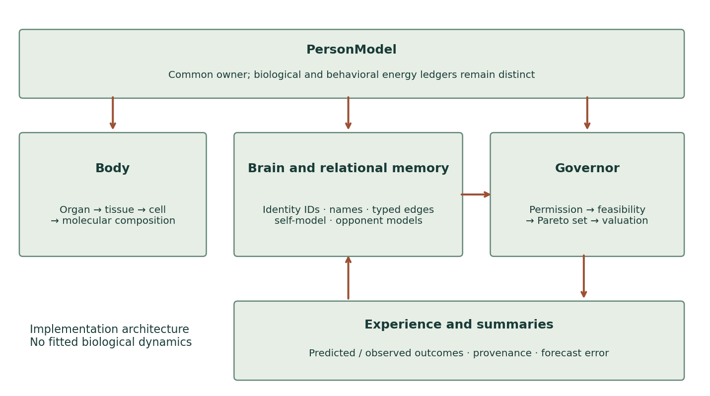
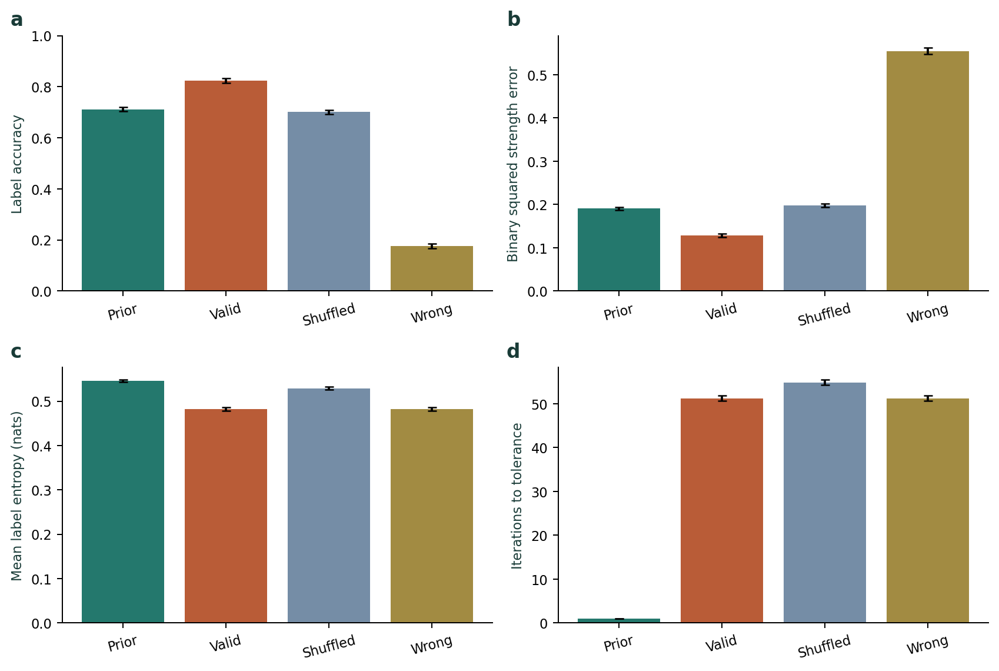
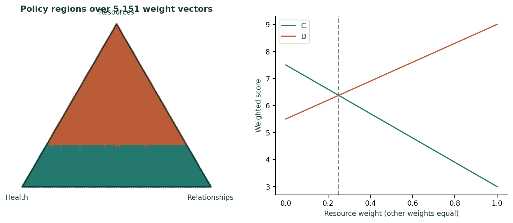
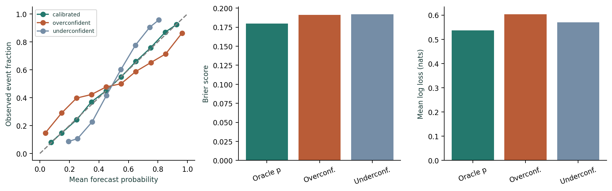
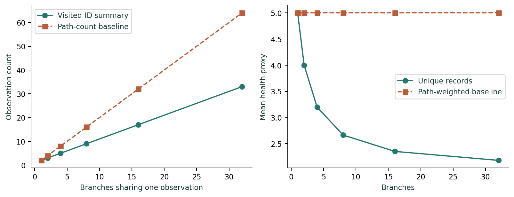
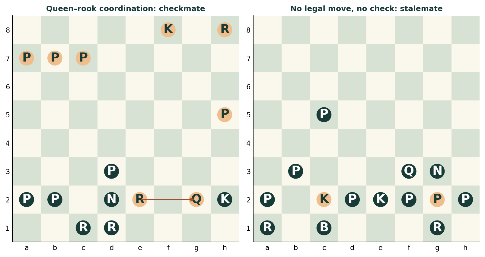
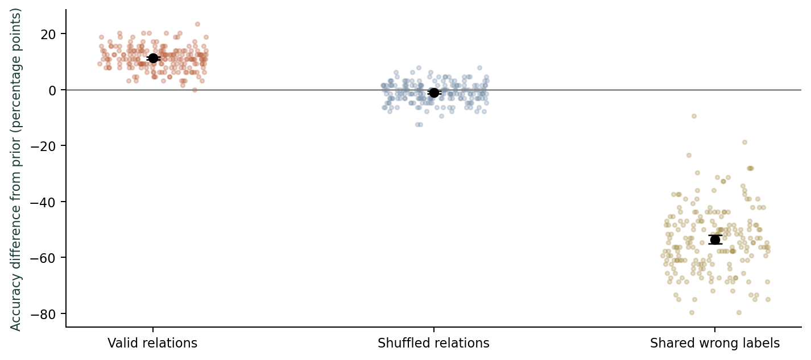
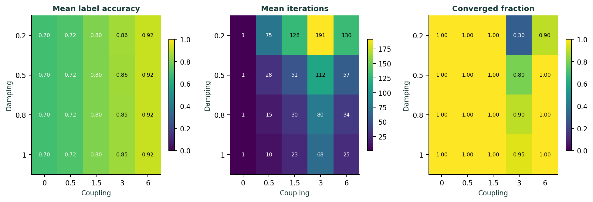
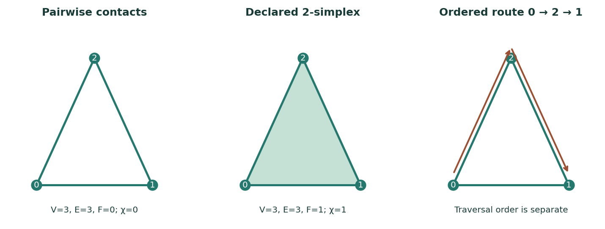
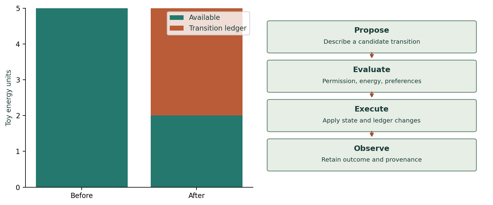
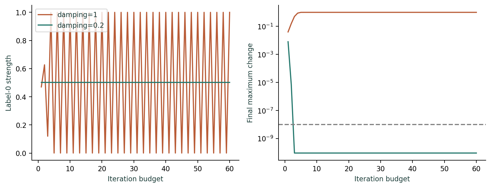
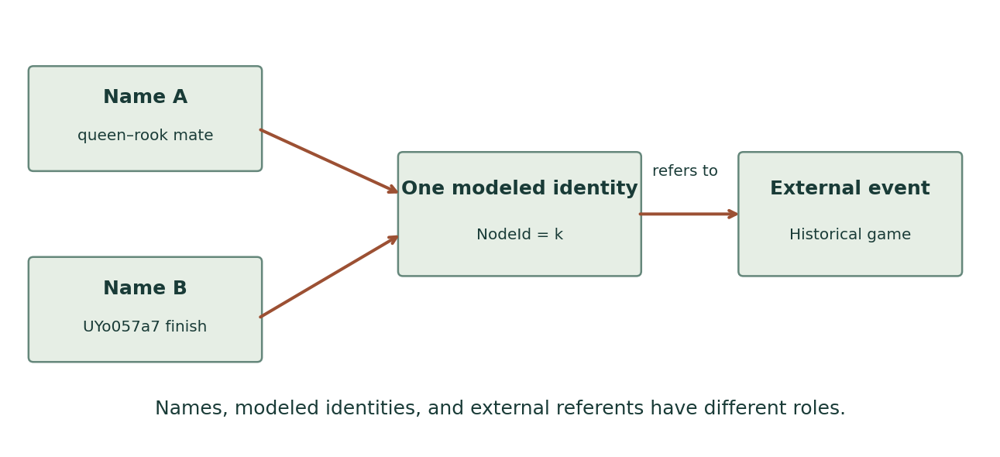
Reproduce and inspect
The reproduction ZIP contains the frozen model, raw CSV files, experiment driver, analysis scripts and a SHA-256 manifest. All four model test suites passed, the evidence audit passed, and the clean arXiv source archive compiled successfully in a separate directory.
Reproduction instructions · Submission preparation notes · Artifact hashes · Browse manuscript source